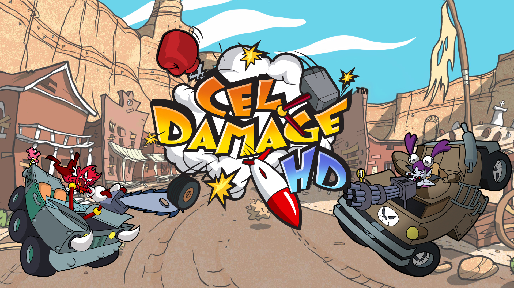

I am currently serving in the Air Force and live with my two puppies, wife, and 7 mos old son. We recerntly moved and have really been enjoying our new location, and have settled into the area really well. I really do not have too many hobbies, but the two I spend most of my time doing are watching sports and playing videogames.
As a child I did not have a ton of influence in my hobbies, mostly becasue my parents always were working and on they also weren't really into sports. I however was fascinated and completely enamored by the idea that someone could play a sport for a living. Making a really good living at that too. One of the first memories I have of being interested in sports was reading a newspaper article discussing the baseball World Series. At the time I wasn't playing baseball anymore because my parents didn't have the money to get me signed up anymore after my first year of slow-pitch/T-ball. I read this story about a team in Boston, Massachusetts that waited 86 years between winning the championship. I thought how incredible would that be to root for a team that long and then have them finally win it all. Next thing I knew I would come home from school and frequently visit The Red Sox homepage, trying to get the latest news about the team I had completely became obsessed with. I was instantly hooked on sports and the inspiration that it stirred inside of me. Today I still root for the Boston Red Sox, and in fact I am watching them in an elimination game right now as I create this website.
Similar to the way my fandom for sports was built, so was a particular fondness for video games and the entertainment they brought to a kid that was otherwise pretty bored gorwing up. Like sports, my family
could not afford video games, so the only opportunity I had to play them was while I visited friend's houses. Needless to say I was spending a lot of time at friends houses trying to get my hands on the controller and beat
them in Super Smash Bros. Melee or Mario Kart Double Dash. My friends had a Playstation, and Gamecube that we would play when I visited. Mostly the Gamecube because, he had two brothers and I made a fourth person. On Gamecube
you had the ability to play with four players, and on Playstation you didn't. Still one of the best Christmases I had as a kid was the year my parents bought us a Gamecube Christmas morning, but said they couldn't afford any games,
so we could only play the game it came with. (It was called Cell Damage and was actually a ton of fun).
Nevertheless we were happy to be able to play video games at all, but then later on at Christmas dinner we opened presents
from family members and our Uncle bought each of us one new game for our new video game system. We were ecstatic and suddenly had not only our own video game system but also had seven games to play!